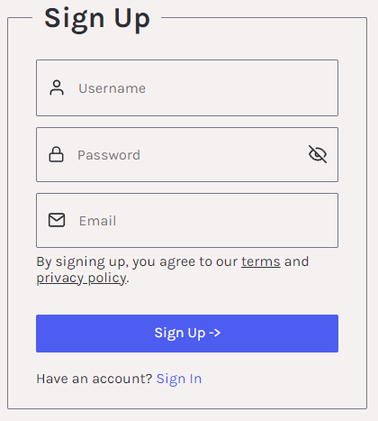
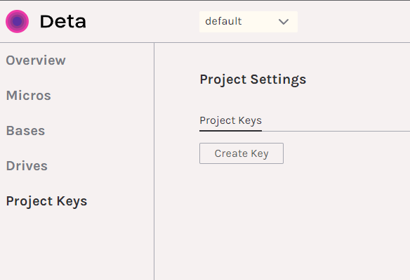

Getting Started¶
Note
A basic understanding of Python and the console would be useful, as we’ll be adding a script to PATH, installing Python, dealing with its aliases, and working with pip.
Setting up the CLI takes just a few steps.
Accounts¶
The only account you’ll need is with Deta. Deta is completely free, and signing up takes just a second.

Once you have an account, you’ll need to create a “project,” or use the “default” pre-created project if you don’t care to organize your Deta account for future use.
Navigate to the “project key” section of your project and create a new key.

Save it, as you’ll need this key when we configure keys.ini later.
Optional Accounts¶
A Bitly account is optional. If you include your Bitly API key in keys.ini, any deliverable links will be automatically shortened in exported PDF reports, so the full shortened link is on the page. Otherwise, the link will be cut off.
A RapidAPI key is optional. It connects to the Capitalize My Title API to enable smart capitalization of your task names. This would turn “doing a very import task” into “Doing a Very Important Task,” as opposed to “Doing A Very Important Task.” If you don’t provide a key, all task names are hard-capitalized (unless you provide the --no-titlecase flag, of course).
Setup¶
That’s all you need. The CLI handles the creation, management, and use of your Deta Bases (separated by month).
Start by cloning the repository somewhere safe.
git clone https://github.com/preritdas/working-hours-cli.git
Then navigate into the repository and rename the keys (sample).ini file to keys.ini. Open it in vim or any text editor.
It should have the following contents.
[Deta]
project_key =
[Bitly]
access_token =
[RapidAPI]
api_key =
Insert your Deta project key after the equals sign (=) under Deta. As mentioend, the other two are optional. If you have them, include them. Save and close the file. It should look something like the below.
[Deta]
project_key = 79asc7d6aprojectkey89df
[Bitly]
access_token = 98a7d87cbitlybitlysa98c
[RapidAPI]
api_key = ha98asdcg98asdcsupersecret9
Don’t include quotes or backslashes for raw characters. The file is parsed raw, so whatever characters are outside the equals sign are considered part of the key.
Requirements¶
You’ll need to have Python 3.10 on your system. If you don’t already, the easiest installation methods are below.
Use Homebrew.
brew install python@3.10
Download the executable installer from python.org. Make sure you add Python to your PATH (an option in the installer), and take note of what the alias is (most likely python).
Check if pip works.
pip list
python -m pip list
python3.10 -m pip list
If none of these show you a list of packages, download this file and run it with Python 3.10.
Use apt and the deadsnakes/ppa repository.
sudo apt update && sudo apt -y upgrade && sudo apt autoremove -y
sudo add-apt-repository ppa:deadsnakes/ppa
sudo apt-get install -y python3.10
sudo apt-get install -y python3.10-pip
See if you have pip working with the following commands…
pip list
python -m pip list
python3 -m pip list
python3.10 -m pip list
If not, run the following script.
curl https://bootstrap.pypa.io/get-pip.py | python
Make sure to replace python above with your correct Python 3.10 alias. It could also be python3 or python3.10.
Packages¶
Once you have Python installed, from within the repository folder you cloned earlier, run pip install -r requirements.txt (replacing pip with your pip alias, which could also be pip3, and if those don’t work, extend from your Python alias, ex. python -m pip install -r requirements.txt replacing python with your Python alias).
The script¶
Almost there. Everything is set up and good to go, but the only way to run the CLI is with python path/to/repo/main.py which is extremely ugly, especially given that your pwd will not be the repo folder when you’re working.
So, take note of the full sytem path to the repo and stick main.py at the end. For example, if your path to the repo (where you cloned it) is Users/yourname/Documents/working-hours-cli, the path you want is Users/yourname/Documents/working-hours-cli/main.py. This is the entry point we’ll need for our script.
#/bin/bash
python3.10 "Users/yourname/Documents/working-hours-cli/main.py" "$@"
This script will work on Mac or Linux. Give it no extension, with the name of the alias you want to use for the CLI (I use loghours). So, save the file as loghours with no extension. It needs to be in a folder on your PATH, so either stick it in the ~/bin/ folder or create a folder and add it to PATH.
Now, you can use loghours to interface with the CLI, as you saw in the CLI Reference.
loghours log
loghours clockin "new task"
loghours clockout --deliver "All the work."
loghours clockin "started earlier" --hours 2
loghours delivery "new task"
loghours pickup "new task"
loghours clockout
loghours previewmonth 8-2022
loghours export 8-2022
loghours totalhours --payrate 30